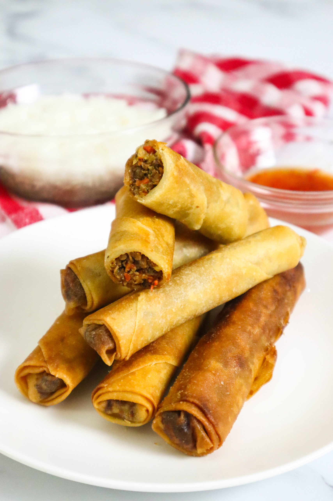

Recipe

The Famouse Pinoy comfort food "Lumpia"!
The famouse Lumpia which is made of thin paper like skin called lumpia wrapper with delicious fillings like pork and vegetables (carrots, beans etc) and is deep fried into golden perfection!
Ingredients
- 1 tablespoon vegetable oil
- 1 pound ground pork
- 2 cloves garlic, crushed
- ½ cup chopped onion
- ½ cup minced carrots
- ½ cup chopped green onions
- ½ cup thinly sliced green cabbage
- 1 teaspoon ground black pepper
- 1 teaspoon salt
- 1 teaspoon garlic powder
- 1 teaspoon soy sauce
- 30 lumpia wrappers
- 2 cups vegetable oil for frying